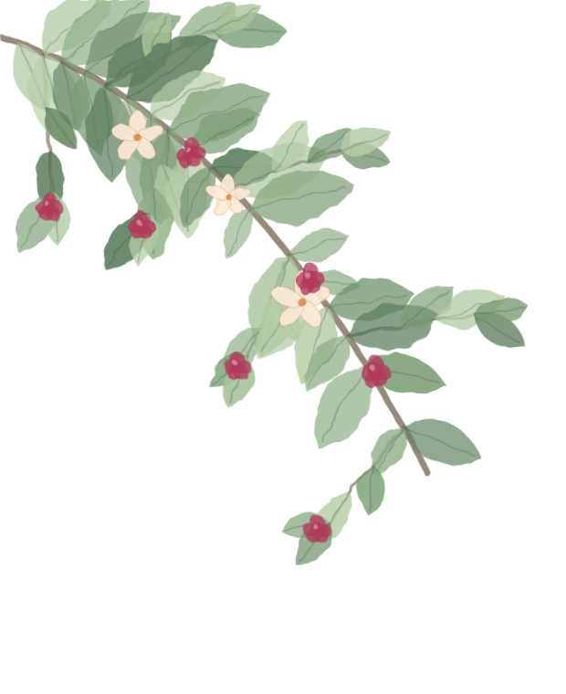

Meneur du Clan du Tonnerre
Étoile de
Étoile de
Framboisier
« Le roc au regard d'azur »

En quelques mots
La fiche du Meneur
Lune après lune
Le mur des lunes
Gravée dans l'écorce
L'Écorce de la Concorde
Suivre le sentier
Explorer le codex
Au fil des lunes